| Menu
Funções |
|
Ir
Para ...
Essa função
permite a localização de trechos específicos no
gráfico usando diferentes métodos de busca, e facilita a definição de
pontos de
ensaio.
Os métodos de
busca são:
Clique no menu “Dados ► Ir
para ... ► [método de busca desejado]”
ou clique no
botão na
Barra de Ferramentas e escolha a opção
desejada:
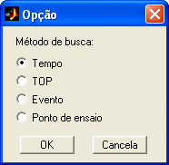
Busca por
Tempo de Referência
Ao escolher “Ir
para tempo”, o R_DAT analisará o parâmetro selecionado
como abscissa. Caso o mesmo for reconhecido
como parâmetro de tempo, ele será usado como referência para
a
busca. Caso não seja, o R_DAT alternará a abscissa para o tempo de
referência
dos eventos e pontos de ensaio, caso exista, ou para o primeiro
parâmetro de
tempo da lista.
Caso o R_DAT
não encontre nenhum parâmetro de tempo, o
usuário poderá usar o parâmetro selecionado na abscissa, considerando
que o
mesmo esteja em segundos.
Após a
definição do tempo de referência, a Caixa de Diálogo
solicitará que o usuário indique os parâmetros para a busca:
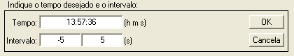
● No campo “y”,
selecione o parâmetro que deseja
visualizar.
● No campo
“Tempo”, insira o tempo desejado em
qualquer formato
reconhecido pelo R_DAT.
● No campo
“Intervalo”, insira a variação, em
segundos, em torno do tempo desejado.
Ao pressionar o
botão “OK” ou a cada mudança em um dos
campos, o R_DAT irá expandir o zoom
para mostrar a localização relativa do trecho desejado no intervalo
total
através de três barras verticais, e então irá fechar o zoom
sobre o trecho desejado. As barras indicam o tempo desejado e
o intervalo.
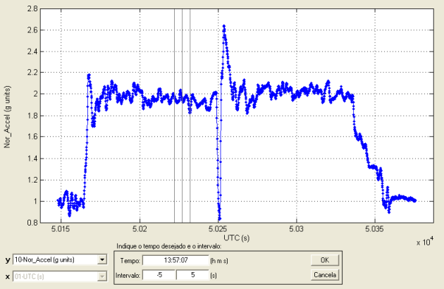
Enquanto a
função estiver ativada, o botão  (Definir
intervalo como ponto
de ensaio) da Barra de Ferramentas ficará habilitado, de modo
a permitir a
rápida definição do trecho localizado como ponto de ensaio.
(Definir
intervalo como ponto
de ensaio) da Barra de Ferramentas ficará habilitado, de modo
a permitir a
rápida definição do trecho localizado como ponto de ensaio.
A função ficará
ativada até que o botão “Cancela” seja
pressionado.
| Nota: O trecho a ser
localizado pelo R_DAT é limitado pela extensão do parâmetro de tempo.
Caso o intervalo desejado esteja totalmente fora da extensão do tempo,
a operação não será realizada. |
Busca por
Parâmetro de TOP
Ao escolher “Ir
para TOP”, o R_DAT
procurará por parâmetros reconhecidos
como TOP na matriz de trabalho.
Se forem encontrados mais de um, o usuário deverá indicar o parâmetro a
ser
utilizado como referência. Esse parâmetro deve ser adequado, ou seja,
ser
composto por valores naturais crescentes.
O parâmetro
selecionado como abscissa também será analisado,
pois é necessário ser um parâmetro de tempo. Caso
o mesmo for reconhecido
como parâmetro de tempo, ele será mantido como abscissa. Caso
não seja, o R_DAT
alternará a abscissa para o tempo de referência dos
eventos e pontos de ensaio (caso esteja definido) ou para o primeiro
parâmetro
de tempo da lista.
Caso o R_DAT
não encontre nenhum parâmetro de tempo, o usuário
poderá usar o parâmetro selecionado na abscissa, considerando que o
mesmo
esteja em segundos.
Após a
definição do parâmetro de TOP e do tempo de
referência, a Caixa de Diálogo solicitará que o usuário indique os
parâmetros
para a busca:
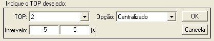
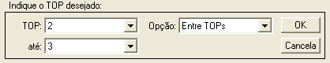
● No campo “y”,
selecione o parâmetro que deseja
visualizar.
● No campo
“Opção”, indique o tipo de busca que deseja
fazer. As opções são:
-
Centralizado; e
- Entre TOPs.
Opção
“Centralizado”
Nesse modo, o
usuário deve indicar o TOP desejado e um
intervalo em segundos entre eles.
● No campo
“TOP”, indique o TOP desejado.
● No campo
“Intervalo”, insira a variação, em
segundos, em torno do TOP desejado.
Opção “Entre TOPs”
Nesse modo, o
usuário deve indicar os TOPs de início e
término do trecho desejado.
● No campo
“TOP”, indique o TOP de início.
● No campo
“até”, indique o TOP de término.
| Nota: O TOP inicial
deve ser anterior ao TOP de término do trecho. |
Ao pressionar o
botão “OK” ou a cada mudança em um dos
campos, o R_DAT irá expandir o zoom
para
mostrar a localização relativa do trecho desejado no intervalo total
através de
duas barras verticais, e então irá fechar o zoom
sobre o trecho desejado.
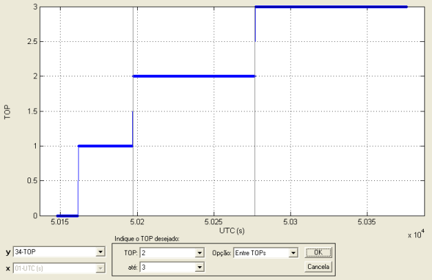
Enquanto a
função estiver ativada, o botão  (Definir
intervalo como ponto
de ensaio) da Barra de Ferramentas ficará habilitado, de modo
a permitir a
rápida definição do trecho localizado como ponto de ensaio.
(Definir
intervalo como ponto
de ensaio) da Barra de Ferramentas ficará habilitado, de modo
a permitir a
rápida definição do trecho localizado como ponto de ensaio.
A função ficará
ativada até que o botão “Cancela” seja
pressionado.
| Nota: O tempo exato
em que o TOP ocorreu não é conhecido. Sabe-se apenas que o mesmo
ocorreu entre as duas observações consecutivas que registraram sua
mudança de valor na instrumentação. Para efeito de correlação entre TOP
e tempo, o R_DAT assume
que o TOP ocorreu no ponto médio entre essas duas observações, como
mostrado na figura abaixo. |

Busca por
Evento
Ao escolher “Ir
para evento”, o R_DAT analisará os eventos
cadastrados e listará os eventos válidos.
O parâmetro
definido como tempo de referência será selecionado
como abscissa.
Caso haja
eventos válidos e o tempo de referência esteja
definido, a Caixa de Diálogo solicitará que o usuário indique os
parâmetros
para a busca:
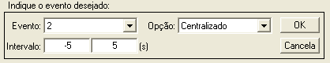
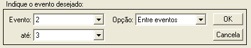
● No campo “y”,
selecione o parâmetro que deseja
visualizar.
● No campo
“Opção”, indique o tipo de busca que deseja
fazer. As opções são:
-
Centralizado; e
- Entre
eventos.
Opção
“Centralizado”
Nesse modo, o
usuário deve indicar o evento desejado e um
intervalo em segundos entre eles.
● No campo
“Evento”, indique o evento desejado.
● No campo
“Intervalo”, insira a variação, em
segundos, em torno do evento desejado.
Opção “Entre
eventos”
Nesse modo, o
usuário deve indicar os eventos de início e
término do trecho desejado.
● No campo
“Evento”, indique o evento de início.
● No campo
“até”, indique o evento de término.
| Nota: O evento de
início deve ser cronologicamente anterior ao evento de término do
trecho. |
Ao pressionar o
botão “OK” ou a cada mudança em um dos campos,
o R_DAT irá expandir o zoom para
mostrar a localização relativa do trecho desejado no intervalo total
através de
duas barras verticais, e então irá fechar o zoom
sobre o trecho desejado.
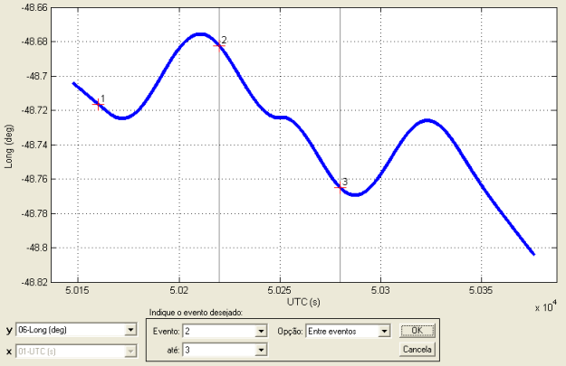
Enquanto a
função estiver ativada, o botão  (Definir
intervalo como ponto
de ensaio) da Barra de Ferramentas ficará habilitado, de modo
a permitir a
rápida definição do trecho localizado como ponto de ensaio.
(Definir
intervalo como ponto
de ensaio) da Barra de Ferramentas ficará habilitado, de modo
a permitir a
rápida definição do trecho localizado como ponto de ensaio.
| Nota: O trecho a ser
localizado pelo R_DAT é limitado pela extensão do parâmetro de tempo de
referência. Caso o intervalo desejado esteja totalmente fora da
extensão do tempo, a operação não será realizada. |
Busca por
Ponto de Ensaio
Ao escolher “Ir
para evento”, o R_DAT analisará os pontos de
ensaio definidos.
O parâmetro
definido como tempo de referência será
selecionado como abscissa.
Caso haja
pontos de ensaio e tempo de referência definidos,
a Caixa de Diálogo solicitará que o usuário indique o ponto desejado
para a
busca:
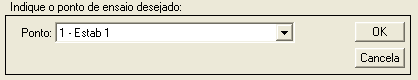
● No campo “y”,
selecione o parâmetro que deseja
visualizar.
● No campo
“Ponto”, indique o ponto de ensaio
desejado.
Ao selecionar o
ponto ou ao pressionar o botão “OK”, o R_DAT
irá expandir o zoom para mostrar a
localização relativa do ponto desejado no intervalo total através de
duas
barras verticais, e então irá fechar o zoom
sobre o ponto desejado.
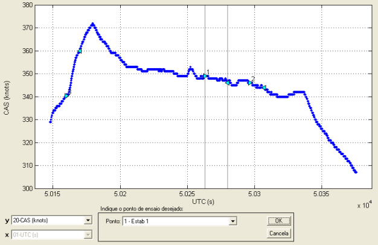
| Nota: O intervalo a
ser localizado pelo R_DAT é limitado pela extensão do parâmetro de
tempo de referência. Caso o ponto de ensaio desejado esteja totalmente
fora da extensão do tempo, a operação não será realizada. |
| |
Menu Dados |
Análise de
dados |
|